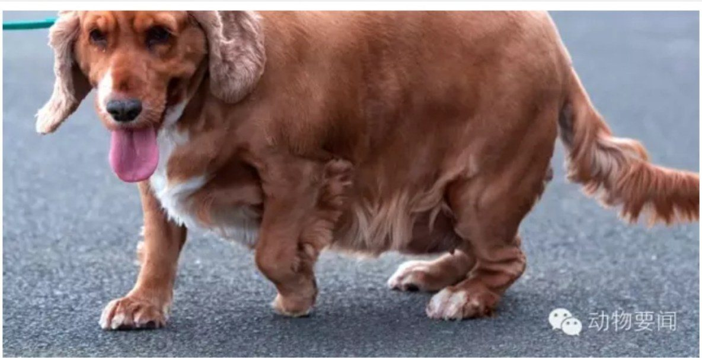
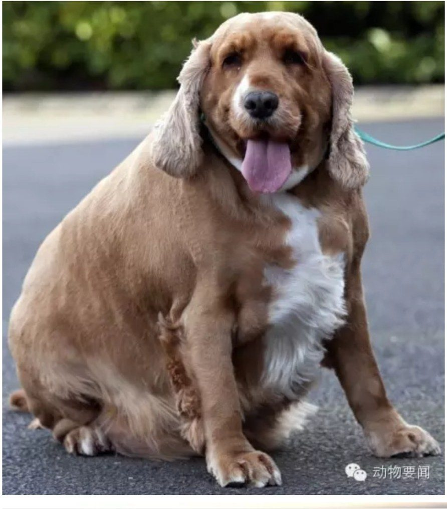
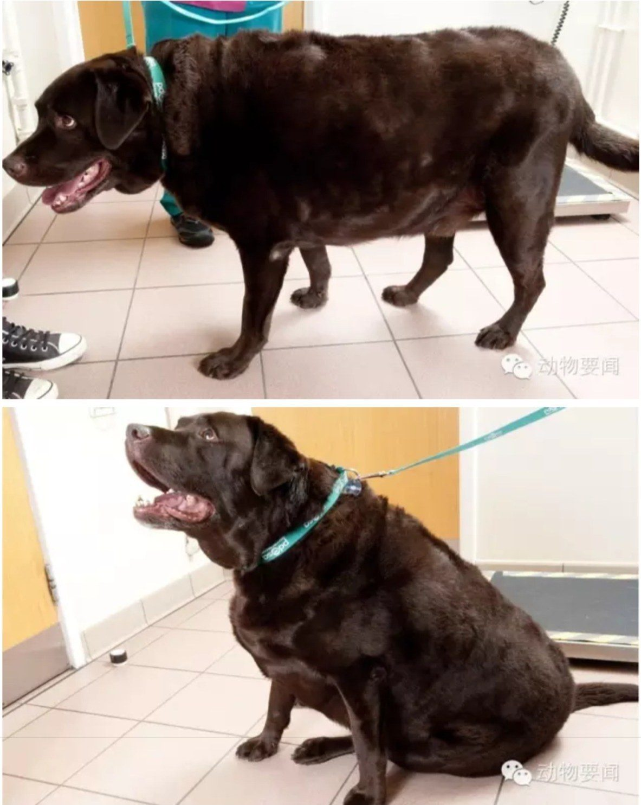
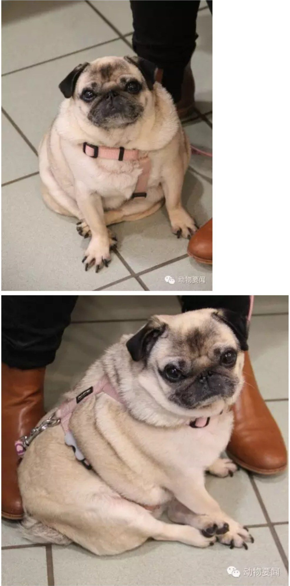

Millie
英国可卡 · 姑娘 · 4岁 · 现在33.5公斤 / 理想16公斤
据说连猫粮都不放过，什么都吃的食神附体型！
PDSA是英国一个救助患病动物的慈善组织，减肥竞赛是他们每年都举办的活动，目的是提醒宠物主人注意宠物健康、合理饮食加强锻炼——因为肥胖而引起健康问题的宠物越来越多啦！这一篇是狗狗选手。
据说连猫粮都不放过，什么都吃的食神附体型！
被人从狗场救出来的，以前生了好多小狗被拿去卖，身材走样了。好在现在被新主人领养，据说已经瘦了很多啦！
Fudge先生最爱吃的居然是生菜。。。
最爱吃薯片，还会偷小朋友们的零食吃。。。
不仅每天在自己家吃，吃完了还会去邻居们家里再吃几顿。。。



